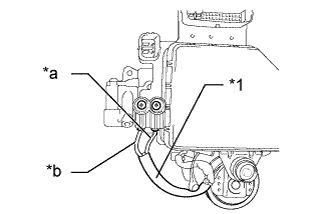

DTC C1252 Brake Booster Pump Motor on Time Abnormally Long |
| DTC Code | DTC Detection Condition | Trouble Area |
| C1252 | The motor operates for 3 minutes or more. |
|
| 1.CHECK PUMP MOTOR OPERATION |
Turn the engine switch off.
Depress the brake pedal more than 40 times.
Turn the engine switch on (IG).
Check how the pump motor operates.
| Result | Proceed to |
| Pump motor does not operate | A |
| Pump motor operates continuously and does not stop | B |
| Pump motor operates intermittently | C |
| Pump motor operates, and then stops | D |
|
| ||||
|
| ||||
|
| ||||
| A | |
| 2.CHECK CONNECTION OF PUMP MOTOR WIRE HARNESS |
Remove the hydraulic brake booster assembly (Click here).
Check the tightening torque of the 2 screws which secure the wire harness connecting the master cylinder solenoid and brake booster with accumulator pump assembly (Click here).
|
| ||||
| OK | |
| 3.CHECK RESISTANCE OF PUMP MOTOR WIRE HARNESS |
Using a screwdriver, remove the 2 screws and pull out the wire harness from the master cylinder solenoid.
|  |
Measure the resistance according to the value(s) in the table below.
| Tester Connection | Condition | Specified Condition |
| Red wire terminal - Black wire terminal | Always | Below 2 Ω |
| *1 | Pump motor wire harness |
| *a | Red wire |
| *b | Black wire |
|
| ||||
| OK | |
| 4.READ VALUE USING INTELLIGENT TESTER (ACCUMULATOR SENSOR) |
Turn the engine switch off.
Connect the intelligent tester to the DLC3.
Turn the engine switch on (IG).
Turn the intelligent tester on.
Enter the following menus: Chassis / ABS/VSC/TRC / Data List.
| Tester Display | Measurement Item/Range | Normal Condition | Diagnostic Note |
| Accumulator Sensor | Accumulator pressure sensor reading/ Min.: 0.00 V, Max.: 5.00 V | 3.58 to 5 V | If the value is constant regardless of the pump operation, an accumulator pressure sensor malfunction is suspected. |
Check the accumulator output value.
| Result | Proceed to |
| Output value is within "Normal Condition" range | A |
| Output value is out of "Normal Condition" range | B |
| Output value is constant regardless of pump operation | C |
|
| ||||
|
| ||||
| A | |
| 5.RECONFIRM DTC |
Clear the DTCs (Click here).
Turn the engine switch off.
Turn the engine switch on (IG).
Wait for more than 5 minutes.
Check if the same DTC is output (Click here).
| Result | Proceed to |
| DTC is output | A |
| DTC is not output | B |
|
| ||||
| A | ||
| ||